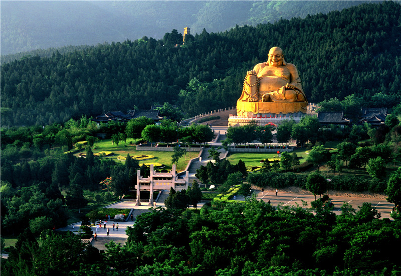

- Thousand Buddha Mountain
-

The Thousand Buddha Mountain is a hill located about 2.5 kilometers southeast of the city of Jinan, the capital of Shandong Province, China. It covers 1.518 square kilometers (375.1 acres) and has a peak of 285 meters (935 ft) above sea level. It is renowned for its numerous Buddha images which have been carved out of the hill's rock faces or free-standing structures erect since the times of the Sui Dynasty (581-618) and its Xingguochan Temple. It is considered one of the "Three Greatest Attractions in Jinan" together with Baotu Spring and Daming Lake. It is also one of the 4A-rated Tourist attractions in China.
As well as its impressive ecological environment, Qianfo Mountain boasts a long history, a profound Buddhist culture and rich folk culture. There are a temple, stone carvings and other relics related to Emperor Shun. Visitors to the spot can admire the exquisite Buddha figures and stone carvings while enjoying picturesque views of ancient trees, gorgeous flowers and rolling mountains.